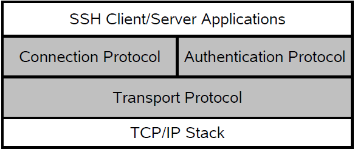

2 Secure Shell (SSH)
2.1 SSH Protocol Overview
Conceptually the SSH protocol can be partitioned into four layers:
Figure 2.1: SSH Protocol Architecture
Transport Protocol
The SSH Transport Protocol is a secure, low level transport. It provides strong encryption, cryptographic host authentication and integrity protection. Currently, only a minimum of MAC- (message authentication code, a short piece of information used to authenticate a message) and encryption algorithms are supported see ssh(3)
Authentication Protocol
The SSH authentication protocol is a general-purpose user authentication protocol run over the SSH transport protocol. Erlang SSH supports user authentication using public key technology (RSA and DSA, X509-certificates are currently not supported). It is also possible to use a so called keyboard interactive authentication. This method is suitable for interactive authentication methods that do not need any special software support on the client side. Instead, all authentication data should be entered via the keyboard. It is also possible to use a pure password based authentication scheme, note that in this case the the plain text password will be encrypted before sent over the network. There are several configuration options for authentication handling available in ssh:connect/[3,4] and ssh:daemon/[2,3] It is also possible to customize the public key handling by implementing the behaviours ssh_client_key_api and ssh_server_key_api
Connection Protocol
The SSH Connection Protocol provides application-support services over the transport pipe, such as channel multiplexing, flow control, remote program execution, signal propagation, connection forwarding, etc. Functions for handling the SSH Connection Protocol can be found in the module ssh_connection.
Channels
All terminal sessions, forwarded connections etc., are channels. Multiple channels are multiplexed into a single connection, and all channels are flow-controlled. Typically an SSH client will open a channel, send data/commands, receive data/"control information" and when it is done close the channel. The ssh_channel behaviour makes it easy to write your own SSH client/server processes that use flow control. It handles generic parts of SSH channel management and lets you focus on the application logic.
Channels comes in three flavors
- Subsystem - named services that can be run as part of an SSH server such as SFTP ssh_sftpd, that is built in to the SSH daemon (server) by default but may be disabled. The Erlang SSH daemon may be configured to run any Erlang implemented SSH subsystem.
- Shell - interactive shell. By default the Erlang daemon will run the Erlang shell. It is possible to customize the shell by providing your own read-eval-print loop. It is also possible, but much more work, to provide your own CLI (Command Line Interface) implementation.
- Exec - one-time remote execution of commands. See ssh_connection:exec/4
Channels are flow controlled. No data may be sent to a channel peer until a message is received to indicate that window space is available. The 'initial window size' specifies how many bytes of channel data that can be sent to the channel peer without adjusting the window.
For more detailed information about the SSH protocol, see the following RFCs: